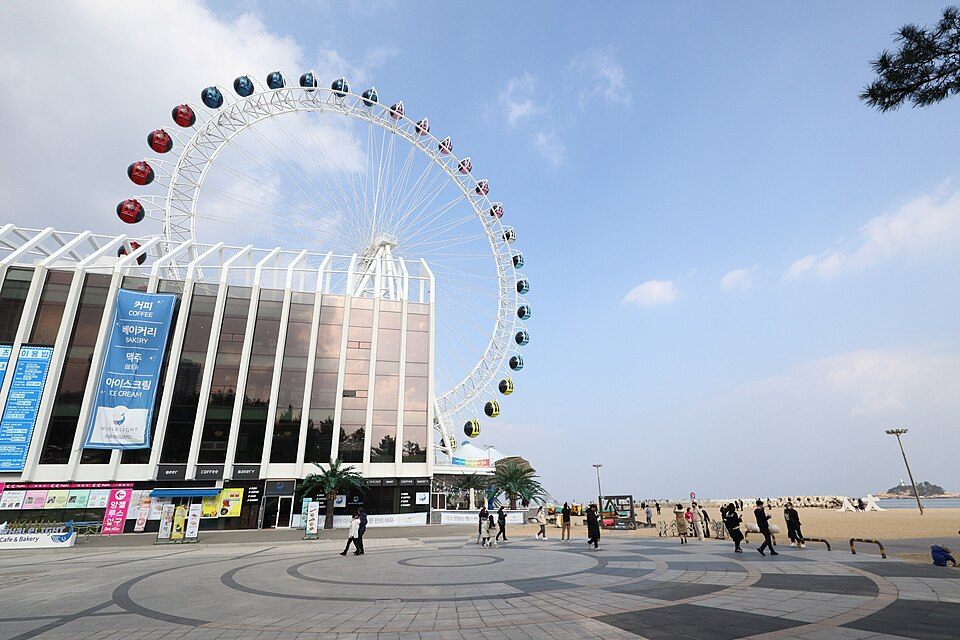
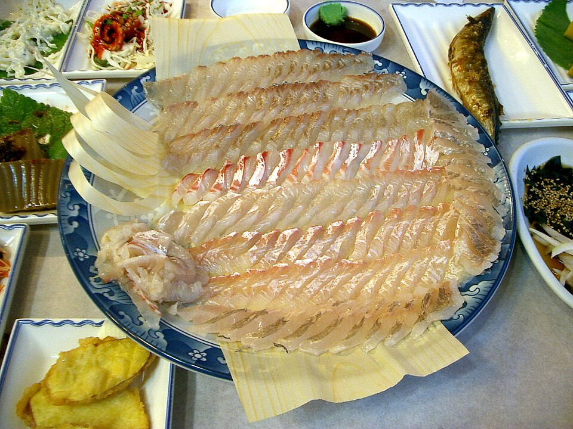
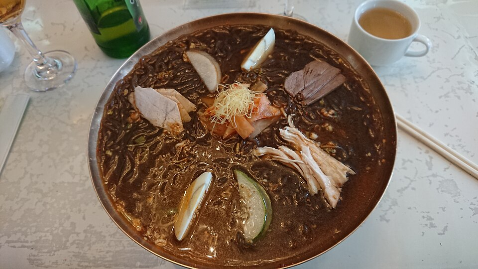
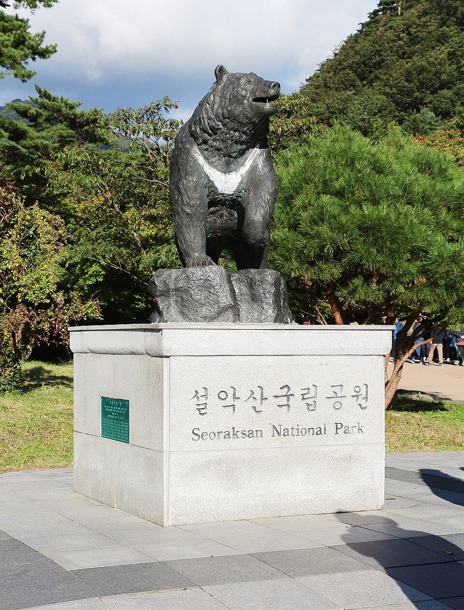
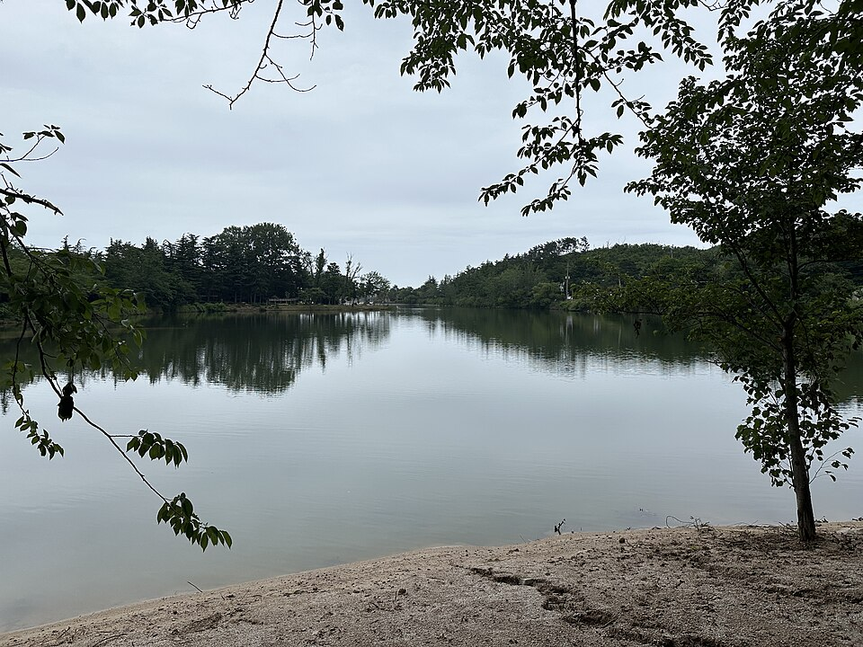
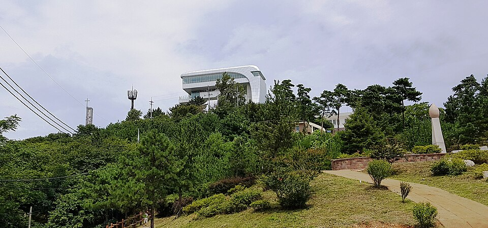
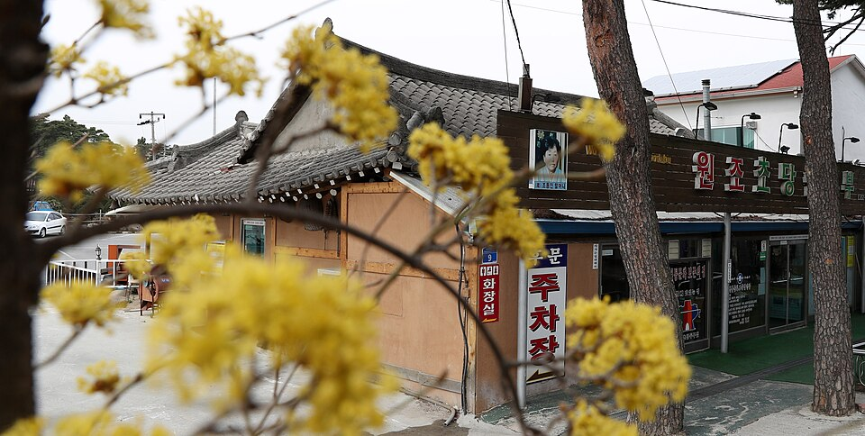
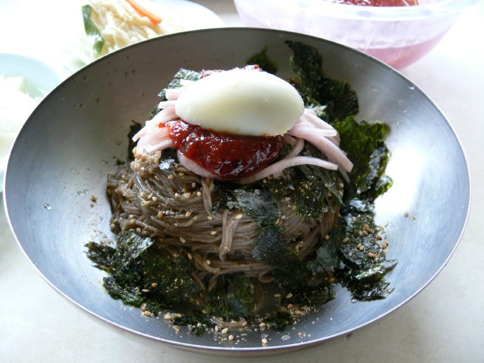
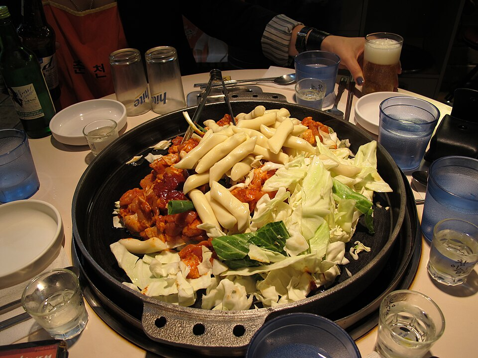

Makanan dan Tempat Gangwon dari Video: Dari Pelabuhan Daepo di Sokcho hingga Chodang di Gangneung
Panduan tempat makan ikan mentah, restoran lokal, kafe, pantai, dan gunung di Gangwon yang muncul dalam video 'Real Korean Food Tour – Sokcho Beach Town Guide' dan 'Weekend in Gangneung', mulai dari ikan segar hingga tahu lembut, mi soba, dan dak galbi.
Gangwon: Makan di Antara Laut dan Pegunungan
Provinsi Gangwon adalah destinasi alam yang terkenal dengan garis pantai Laut Timur, Seoraksan, dan Pulau Nami. Makanan khasnya antara lain dak galbi Chuncheon, kepiting salju dan mi ikan mentah (hoe-guksu) Sokcho, tahu lembut Chodang di Gangneung, serta mi soba makguksu. Panduan ini mengelompokkan restoran dan tempat yang tampil di dua video, Real Korean Food Tour – Sokcho Beach Town Guide dan Weekend in Gangneung, berdasarkan area.
Pelabuhan Daepo, Sokcho
DaePoRee HwetJip (Restoran Ikan Mentah)
📍 DaePoRee HwetJip · Naver Map · Google Maps
Restoran ikan mentah di Pelabuhan Daepo yang menyajikan ikan segar, ditampilkan dalam video wisata pantai Sokcho.
MuhGuLee HwetJip (Restoran Ikan Mentah)
📍 MuhGuLee HwetJip · Naver Map · Google Maps
Tempat lain di Pelabuhan Daepo untuk ikan mentah segar, pilihan yang baik jika Anda ingin makan di dekat perahu.
Penginapan Bau-Haus Pension
📍 Penginapan Bau-Haus Pension · Naver Map · Google Maps
Penginapan dekat Pelabuhan Daepo, berguna jika Anda ingin menginap dan menikmati pelabuhan serta restorannya dengan santai.
Sekitar Pantai Sokcho

📍 Pantai Sokcho · Naver Map · Google Maps
Pantai Sokcho
Pantai kota yang menjadi pusat banyak adegan dalam video Sokcho.
JangSu HwalUh HwetJip (Restoran Ikan Hidup)
📍 JangSu HwalUh HwetJip · Naver Map · Google Maps
Restoran ikan mentah dengan ikan hidup di Pantai Sokcho, praktis untuk makan setelah berjalan di pasir.
HwangGu HwalUh HwetJip (Restoran Ikan Hidup)

📍 HwangGu HwalUh HwetJip · Naver Map · Google Maps
Restoran ikan mentah dengan ikan hidup lain yang diperkenalkan dalam video Sokcho.
Brotherhood Coffee
📍 Brotherhood Coffee · Naver Map · Google Maps
Kafe di Pantai Sokcho, tempat mudah untuk duduk minum kopi setelah makan seafood.
Kedai Tanghulu (Sokcho)
📍 Kedai Tanghulu · Naver Map · Google Maps
Kedai yang menjual tanghulu, buah segar yang dilapisi lapisan gula keras. Camilan ini cocok dinikmati sambil berjalan-jalan.
Makan Lainnya di Sokcho
DanChun MyunOak (Restoran Mi Dingin)

📍 DanChun MyunOak · Naver Map · Google Maps
Tempat untuk naengmyeon, mi dingin khas Korea, yang menjadi variasi menyenangkan di antara makan ikan mentah.
YoungBin BanJeom (Restoran Tiongkok)
📍 YoungBin BanJeom · Naver Map · Google Maps
Restoran gaya Korea-Tionghoa yang menyajikan hidangan seperti jjajangmyeon, mi dengan saus kacang hitam.
KongSeuhLee (Restoran Tahu)

📍 KongSeuhLee · Naver Map · Google Maps
Restoran yang berfokus pada hidangan tahu, layak dipertimbangkan jika Anda menginginkan makanan yang lebih ringan.
KongGaNeh (Restoran Sup Kentang Ongsimi)
📍 KongGaNeh · Naver Map · Google Maps
Menyajikan gamja ongsimi, sup khas Gangwon dengan pangsit kentang kecil yang mirip gnocchi.
YeonTan Bul SaengGuYi (Restoran Barbekyu Babi)
📍 YeonTan Bul SaengGuYi · Naver Map · Google Maps
Tempat barbekyu di mana daging babi dipanggang di atas arang briket yeontan, pilihan bagus jika Anda ingin daging selain makanan laut.
Alam dan Tempat Wisata di Sokcho, Yangyang, dan Goseong
Seoraksan (Taman Nasional Sorak)

📍 Seoraksan · Naver Map · Google Maps
Gunung paling terkenal di Gangwon, dilindungi sebagai taman nasional.
Danau Yeongnangho

📍 Danau Yeongnangho · Naver Map · Google Maps
Danau di Sokcho dengan pemandangan yang lebih tenang dibandingkan laut terbuka.
Resor Air Panas Cheoksan
📍 Resor Air Panas Cheoksan · Naver Map · Google Maps
Spa air panas mineral, praktis untuk bersantai setelah mendaki atau seharian di pantai.
Pantai Selancar Yangyang
📍 Pantai Selancar Yangyang · Naver Map · Google Maps
Pantai di Yangyang yang terkenal untuk selancar.
Menara Pengamatan Unifikasi Goseong

📍 Menara Pengamatan Unifikasi Goseong · Naver Map · Google Maps
Menara pengamatan unifikasi di Goseong.
Toko Suvenir Asian Highway
📍 Toko Suvenir Asian Highway · Naver Map · Google Maps
Toko suvenir yang ditampilkan dalam video, pilihan untuk membeli oleh-oleh.
Akhir Pekan di Gangneung
Chodang Sundubu

📍 Chodang Sundubu · Naver Map · Google Maps
Tempat untuk mencoba sundubu, tahu lembut yang terkenal di Gangneung. Tempat ini muncul dalam video Weekend in Gangneung.
Soon Tofu Gelato
📍 Soon Tofu Gelato · Naver Map · Google Maps
Toko yang membuat gelato dari tahu lembut, pilihan makanan penutup alami setelah makan sundubu.
Chodang Coffee Jeongmiso
📍 Chodang Coffee Jeongmiso · Naver Map · Google Maps
Kafe di kawasan Chodang.
Chodang Whale Roasting Cafe
📍 Chodang Whale Roasting Cafe · Naver Map · Google Maps
Kafe lain di Chodang, kali ini sekaligus tempat penyangraian kopi, juga ditampilkan dalam video.
Gyeongpo Makguksu

📍 Gyeongpo Makguksu · Naver Map · Google Maps
Restoran yang menyajikan makguksu, mi soba.
Dak Galbi Chuncheon (Gangneung)

📍 Dak Galbi Chuncheon · Naver Map · Google Maps
Tempat di Gangneung untuk mencoba dak galbi gaya Chuncheon, ayam tumis pedas.
Pantai Anmok

📍 Pantai Anmok · Naver Map · Google Maps
Pantai di Gangneung yang cocok untuk beristirahat di tepi air.
Samyang Roundhill
📍 Samyang Roundhill · Naver Map · Google Maps
Peternakan di puncak gunung dengan pemandangan dataran tinggi, kontras dengan pantai.
Tips Rute
Sebaiknya perlakukan Sokcho dan Gangneung sebagai dua basis terpisah. Di Sokcho, gabungkan restoran Pelabuhan Daepo dengan menginap di Bau-Haus Pension, lalu habiskan hari berikutnya di sekitar restoran dan kafe Pantai Sokcho serta Danau Yeongnangho sebelum pergi ke Seoraksan atau Resor Air Panas Cheoksan. Pantai Selancar Yangyang berada searah di perjalanan antara Sokcho dan Gangneung, sementara Menara Pengamatan Unifikasi Goseong di utara lebih mudah dijadikan perjalanan tersendiri. Di Gangneung, kelompokkan Chodang Sundubu, Soon Tofu Gelato, dan kedua kafe Chodang, lalu isi makan lainnya dengan Pantai Anmok, Gyeongpo Makguksu, dan dak galbi. Samyang Roundhill berada di puncak gunung, jadi siapkan waktu perjalanan yang cukup.
Tempat di video
- DaePoRee HwetJip (Restoran Ikan Mentah) (대포리횟집) Ikan mentah segar di Pelabuhan Daepo Naver Map Google Maps
- MuhGuLee HwetJip (Restoran Ikan Mentah) (머구리횟집) Ikan mentah segar di Pelabuhan Daepo Naver Map Google Maps
- Penginapan Bau-Haus Pension (바우하우스 펜션) Penginapan dekat Pelabuhan Daepo Naver Map Google Maps
- HwangGu HwalUh HwetJip (Restoran Ikan Hidup) (황구활어횟집) Ikan mentah dari ikan hidup Naver Map Google Maps
- JangSu HwalUh HwetJip (Restoran Ikan Hidup) (장수활어횟집) Ikan mentah dari ikan hidup di Pantai Sokcho Naver Map Google Maps
- Brotherhood Coffee (브라더후드 커피) Kafe di Pantai Sokcho Naver Map Google Maps
- DanChun MyunOak (Restoran Mi Dingin) (단천면옥) Mi dingin Naver Map Google Maps
- YoungBin BanJeom (Restoran Tiongkok) (영빈반점) Hidangan gaya Korea-Tionghoa, jjajangmyeon Naver Map Google Maps
- KongSeuhLee (Restoran Tahu) (콩서리) Hidangan tahu Naver Map Google Maps
- KongGaNeh (Restoran Sup Kentang Ongsimi) (공가내) Sup kentang mirip gnocchi Naver Map Google Maps
- YeonTan Bul SaengGuYi (Restoran Barbekyu Babi) (연탄불생구이 속초맛집) Barbekyu babi dengan arang briket yeontan Naver Map Google Maps
- Kedai Tanghulu (Sokcho) (탕후루 (속초)) Buah segar berlapis gula Naver Map Google Maps
- Pantai Sokcho (속초해수욕장) Pantai Naver Map Google Maps
- Pantai Selancar Yangyang (양양 서핑 해변) Pantai selancar Naver Map Google Maps
- Menara Pengamatan Unifikasi Goseong (고성 통일전망타워) Menara pengamatan unifikasi Naver Map Google Maps
- Seoraksan (Taman Nasional Sorak) (설악산) Taman nasional Naver Map Google Maps
- Danau Yeongnangho (영랑호) Danau di Sokcho Naver Map Google Maps
- Resor Air Panas Cheoksan (척산온천휴양촌) Spa air panas mineral Naver Map Google Maps
- Toko Suvenir Asian Highway (아시안하이웨이 기념품샵) Toko suvenir Naver Map Google Maps
- Samyang Roundhill (삼양라운드힐) Peternakan di puncak gunung Naver Map Google Maps
- Gyeongpo Makguksu (경포막국수) Makguksu (mi soba) Naver Map Google Maps
- Chodang Coffee Jeongmiso (초당커피정미소) Kafe Naver Map Google Maps
- Chodang Whale Roasting Cafe (초당 고래 로스팅 카페) Kafe Naver Map Google Maps
- Pantai Anmok (안목해변) Pantai Naver Map Google Maps
- Chodang Sundubu (초당순두부) Sundubu (tahu lembut) Naver Map Google Maps
- Soon Tofu Gelato (순두부젤라또) Gelato tahu lembut Naver Map Google Maps
- Dak Galbi Chuncheon (Gangneung) (춘천닭갈비 (강릉)) Dak galbi (ayam tumis pedas) Naver Map Google Maps
Lokasi dan jam buka bisa berubah, cek peta sebelum berangkat.
Video terkait


Artikel lainnya
- Seoul di Layar: Makanan dan Tempat dari Video Perjalanan Terbaru
- Makanan dan Tempat Menarik di Gyeonggi & Incheon dari Video: Chinatown Incheon, Wolmido, Jalan Ayam Goreng Suwon dan Benteng Hwaseong Haenggung
- Tempat Seoul di Acara TV: Lotte World Tower 541m dan Museum Perang Korea
- Jeonnam di Layar: Kereta Gantung Laut Yeosu dan Pulau Odongdo
- Panduan Kuliner Jeollanam-do: Kepiting Yeosu, Hidangan Laut dan Banchan Mokpo, serta Jajanan Gwangju dari Acara Kuliner Korea
- Panduan Makanan Jalanan & Pasar di Seoul: Apa yang Dimakan di Pasar Gwangjang, Pasar Ikan Noryangjin, dan Lainnya (Berdasarkan Video Food Tour)